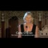

<html lang="en">
 <head>
  <meta charset="utf-8"/>
  <title>
   Roseanne Barr opens for Cathy OBrien on MKULTRA Mind Control (generational child abuse, centrality of Catholic Church, Inquisition, government torture)
  </title>
  <meta content="Post on /v/Pizzagate archived on 2016-12-21 by naturehelps." name="description"/>
  <meta content="Roseanne Barr opens for Cathy OBrien on MKULTRA Mind Control (generational child abuse, centrality of Catholic Church, Inquisition, government torture)" property="og:title"/>
  <meta content="Post on /v/Pizzagate archived on 2016-12-21 by naturehelps." property="og:description"/>
  <link href="../../page.css" rel="stylesheet"/>
  <meta content="https://voat.pizzagate.hackliberty.org/thumbnails/05/ff/05ff9e02-52d0-4fbb-918f-d3952e413b76.jpg" property="og:image"/>
  <meta content="https://voat.pizzagate.hackliberty.org/v/pizzagate/1508207.html" property="og:url"/>
  <meta content="width=device-width, initial-scale=1" name="viewport"/>
  <link href="https://voat.pizzagate.hackliberty.org/1508207.html" rel="canonical"/>
  <meta content="article" property="og:type"/>
  <meta content="Voat /v/Pizzagate Archive" property="og:site_name"/>
  <meta content="en_US" property="og:locale"/>
  <meta content="summary_large_image" name="twitter:card"/>
  <meta content="Roseanne Barr opens for Cathy OBrien on MKULTRA Mind Control (generational child abuse, centrality of Catholic Church, Inquisition, government torture)" name="twitter:title"/>
  <meta content="Post on /v/Pizzagate archived on 2016-12-21 by naturehelps." name="twitter:description"/>
  <meta content="https://voat.pizzagate.hackliberty.org/thumbnails/05/ff/05ff9e02-52d0-4fbb-918f-d3952e413b76.jpg" name="twitter:image"/>
 </head>
</html>
<body class="dark">
 <div id="container">
  <!-- array (
  'submissionid' => 1508207,
  'creationDate' => '2016-12-21 21:14:21',
  'domain' => 'youtube.com',
  'formattedContent' => NULL,
  'isAdult' => 0,
  'isAnonymized' => 0,
  'subverse' => 'pizzagate',
  'thumbnail' => '05ff9e02-52d0-4fbb-918f-d3952e413b76.jpg',
  'title' => 'Roseanne Barr opens for Cathy OBrien on MKULTRA Mind Control (generational child abuse, centrality of Catholic Church, Inquisition, government torture)',
  'url' => 'https://www.youtube.com/watch?v=xfWLLyN4IX0',
  'userName' => 'naturehelps',
  'archivedLink' => NULL,
  'archivedDomain' => NULL,
  'isDeleted' => 0,
) -->
  <div style="text-align:center; font-size:24px; font-weight:bold;">
   <a href="../../index.html" style="text-decoration: none; color: inherit;">
    Voat /v/Pizzagate Archive
   </a>
  </div>
  <div class="content" role="main">
   <div class="sitetable linklisting" id="siteTable">
    <div class="submission id-1508207 link type-text" id="submission-1508207">
     <a name="submissionTop">
     </a>
     <p class="parent">
     </p>
     <a class="thumbnail may-blank" href="https://www.youtube.com/watch?v=xfWLLyN4IX0" target="_self">
      
     </a>
     <div class="entry unvoted">
      <p class="title">
       <a class="title may-blank" href="https://www.youtube.com/watch?v=xfWLLyN4IX0" tabindex="1" target="_self" title="Roseanne Barr opens for Cathy OBrien on MKULTRA Mind Control (generational child abuse, centrality of Catholic Church, Inquisition, government torture)">
        Roseanne Barr opens for Cathy OBrien on MKULTRA Mind Control (generational child abuse, centrality of Catholic Church, Inquisition, government torture)
       </a>
       <span class="domain">
        (
        <a href="https://archive.searchvoat.co/search.php?d=youtube.com">
         youtube.com
        </a>
        )
       </span>
      </p>
      <p class="tagline">
       submitted
       <time datetime="2016-12-21T21:14:21+00:00" title="12/21/2016 9:14:21 PM">
        2016-12-21T21:14:21
       </time>
       by
       <span class="userattrs">
        <a class="author may-blank" href="https://archive.searchvoat.co/search.php?u=naturehelps">
         naturehelps
        </a>
       </span>
      </p>
      <ul class="flat-list buttons">
       <li class="first">
        <a class="comments may-blank" href="https://archive.searchvoat.co/v/pizzagate/1508207" rel="nofollow">
         1 comment
        </a>
       </li>
      </ul>
     </div>
     <div class="child">
     </div>
     <div class="clearleft">
     </div>
    </div>
    <div class="clearleft">
    </div>
   </div>
   <div class="horizontal-line">
   </div>
   <div class="commentarea">
    <div class="sitetable nestedlisting" id="siteTable">
     <div class="child id-7323984 comment even" style="">
      <div class="entry unvoted">
       <div class="noncollapsed" id="7323984" style=";">
        <p class="tagline">
         <a class="author may-blank" href="https://archive.searchvoat.co/search.php?u=naturehelps">
          naturehelps
         </a>
         <span class="userattrs">
         </span>
         <time datetime="2016-12-21T21:53:24+00:00" title="12/21/2016 9:53:24 PM">
          2016-12-21T21:53:24
         </time>
        </p>
        <div class="usertext-body may-blank-within" id="commentContent-7323984">
         <div class="md">
          <p>
           <p>
            This video offers a huge overview, bringing many institutions together.
           </p>
           <p>
            It seems that "national security" which is being used to prevent public access to information on US torture programs, may be there not as the public has thought, to cover up the torture of political prisoners, but ALSO [and perhaps especially?] to cover up on-going US government child torture programs.
           </p>
           <p>
            O'Brien says, "They are still covering up tortures, they are still covering up mind control and it's got to stop.  The truth needs to come out and it needs to be brought to light.  ....
           </p>
           <p>
            "We ALL need to know the MAGNITUDE of what's REALLY going on in our world, because Dick Cheney, George Bush, Senior - not George Bush, Junior, he was absolutely under mind control in the same projects I was, he was even in the most dangerous [....?], that's why he comes off so dense - he's really not the one, we need to go behind the scenes, behind the scene [....] because the shadow government has been running it for too many decades now."
           </p>
           <p>
            "Now, that awareness is rising and people are waking up to the point where they even have to say "torture" on TV, where it is finally coming out, there is that hope that maybe people will begin to research further and look into what's REALLY happening because that torture issue is like a hole in the dyke of what is really behind all of it.  And that truth needs to start pouring forth."
           </p>
           <p>
            <strong>
             .... that torture issue is like a hole in the dyke of what is really behind all of it.
            </strong>
           </p>
           <p>
            <strong>
             .... that torture issue is like a hole in the dyke of what is really behind all of it.
            </strong>
           </p>
           <p>
            <strong>
             .... that torture issue is like a hole in the dyke of what is really behind all of it.
            </strong>
           </p>
           <p>
            Is child torture part of US government torture information and photos Obama won't release?
           </p>
           <p>
            This is so far beyond sickening, and suddenly it is hard not to feel bad for GWBush.  It's good there are so many people investigating and committed to doing so, because this is truly unbearable.
           </p>
          </p>
         </div>
        </div>
        <ul class="flat-list buttons">
         <li class="first">
          <a class="bylink" href="https://archive.searchvoat.co/v/pizzagate/1508207/7323984" rel="nofollow">
           link
          </a>
         </li>
        </ul>
       </div>
      </div>
     </div>
    </div>
   </div>
  </div>
 </div>
 <div class="footer-container">
 </div>
</body>
